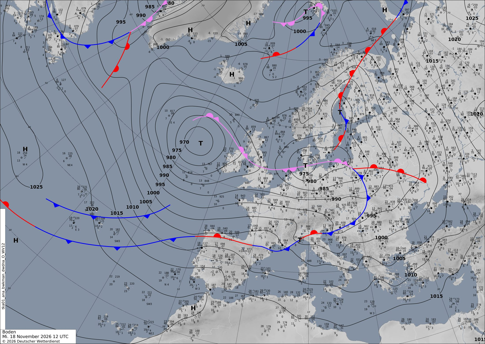

Autopista atlántica: un frente frío riega Portugal y Francia queda bajo el chorro
Dos borrascas muy profundas en el norte y un chorro casi recto lanzan frentes hacia el oeste de Europa. Esta tarde el centro de Portugal se lleva el chaparrón más fuerte, y Francia encadena tres días de lluvia y viento.
Europa y el Atlántico
Hoy, miércoles, el norte de Europa tiene dos borrascas muy profundas. Una está sobre el mar del Norte, junto a Dinamarca, y a medianoche marcaba unos 967 hPa. La otra está en el Atlántico, al oeste de Irlanda, con unos 964 hPa. Al sur, el anticiclón de Marruecos llega a 1026 hPa. Entre las bajas y el anticiclón, las isobaras van muy juntas sobre el Atlántico y Europa central. Eso significa viento fuerte del oeste. Mira aquí cómo se aprietan.
A unos 10 km de altura, la corriente en chorro corre casi recta de oeste a este. Su núcleo, al noroeste de la Península, llega a 94 m/s (337 km/h). Es una autopista que empuja un frente tras otro hacia Europa occidental. Fíjate en la franja morada del mapa de altura.
La carta del DWD de las 12 UTC de hoy dibuja un largo frente frío (línea azul con triángulos). Va desde el Atlántico y pasa por el Cantábrico y el golfo de León hasta una pequeña baja en el golfo de Génova. En el satélite de las 16 UTC se ve el remolino de la borrasca atlántica y la banda de nubes que barre el norte peninsular.
Cómo evoluciona:
- Mañana (jueves 19): la borrasca atlántica se rellena algo (973 hPa) y empuja el frente sobre Portugal y el noroeste peninsular. La del mar del Norte se marcha al Báltico. El chorro baja hacia Francia y los Alpes: 85 m/s al noreste de Lyon.
- Pasado mañana (viernes 20): la borrasca atlántica, ya débil (991 hPa), se acerca al sur de Irlanda y su lluvia cruza Francia. En Hungría se forma otra baja (987 hPa). Sobre Castilla-La Mancha se instala un anticiclón de 1024 hPa.
- Sábado 21 (+72 h): al oeste de Irlanda aparece una nueva borrasca (986 hPa) bajo una vaguada que se hunde en el Atlántico. La circulación deja de ir recta y se ondula. El aire llega del suroeste a la Península y a Francia. Compara el mapa de altura del sábado. A tres días vista, el modelo aún puede cambiar dónde se coloca esa vaguada.
En península ibérica y Baleares
La Península queda en el borde sur de la autopista atlántica. El frente frío del Cantábrico ha dejado esta mañana hasta 21 mm en 12 horas en el norte. Lo más fuerte llega esta tarde y esta noche. Una vaguada, que a medianoche estará sobre Asturias, empuja el frente hacia el interior. El modelo da hasta 73 mm entre las 12 y las 24 UTC de hoy en el centro de Portugal, en la zona de la sierra da Estrela. Es lluvia frontal y orográfica a la vez: el frente obliga al aire húmedo atlántico a subir, y las montañas lo levantan todavía más. Mira aquí la mancha de lluvia.
El viento también se nota. A 10 m de altura puede llegar a 77 km/h esta noche y a 75 km/h mañana a mediodía, sobre todo en las zonas expuestas del norte y del oeste. Mientras, el sureste está bajo una dorsal centrada en Murcia y tiene otro tiempo: a mediodía de hoy el modelo da hasta 28 °C en algún punto, y mañana hasta 26 °C.
Detrás del frente entra aire más fresco. Hoy la temperatura media a 850 hPa ronda los 11 °C, y mañana a mediodía baja a unos 7 °C. El viernes el anticiclón se asienta sobre Castilla-La Mancha. Con el cielo más despejado y poco viento, el suelo pierde calor de noche: a medianoche del viernes el interior puede bajar hasta −3 °C en algún punto. Aun así, el oeste no se queda seco. Siguen cayendo entre 15 y 25 mm cada 12 horas en algún punto hasta el sábado, cuando se acerca un nuevo frente atlántico. Baleares queda lejos de las zonas de lluvia intensa que detecta el modelo.
En Francia
Francia está justo debajo de la corriente en chorro, y eso se nota. Hoy la presión baja a 982 hPa en el norte, el lado más cercano a la borrasca del mar del Norte. Las isobaras van apretadas, así que el viento a 10 m llega a 62 km/h hoy, a 77 km/h esta noche y a 75 km/h mañana a mediodía.
El mismo frente que riega la Península deja hoy hasta 30 mm entre las 00 y las 12 UTC en el sur del país, a lo largo de los Pirineos y el golfo de León. Después, lo que cambia respecto a España es que la lluvia no se va. Los restos de la borrasca atlántica entran por el oeste y dejan 35 mm el jueves y hasta 44 mm el viernes por la mañana (00–12 UTC) en algún punto. Mira la banda de lluvia del viernes. El CAPE, la energía disponible para que el aire suba por sí solo, llega a unos 670 J/kg. No es mucho, pero basta para alguna tormenta aislada. El aire también se enfría: el sábado, a 850 hPa, el punto más frío del país baja a −2 °C. En las cumbres alpinas el modelo da hasta −12 °C a medianoche. El sábado sube la presión y el viento amaina.
París y alrededores. Hoy, miércoles, a mediodía hay unos 13 °C y a medianoche unos 10 °C. Caen chubascos débiles, de menos de 2 mm por la mañana y unos 3 mm por la tarde, con viento de hasta 30 km/h. El jueves vuelve a llover poco: unos 4 mm por la mañana y 2 mm por la tarde. A mediodía hay 12–13 °C y a medianoche 9 °C, con viento de hasta 30 km/h. El viernes caen unos 3 mm por la mañana y 4 mm por la tarde y noche. A mediodía hay 12–13 °C y a medianoche del sábado 8–9 °C. La presión sube de 990 a 1014 hPa y el viento afloja hasta 13 km/h.
Lección del día: Frentes: frío, cálido y ocluido
Hoy vamos a seguir un frente frío desde la carta de análisis hasta el modelo.
- Abre la carta del DWD de las 12 UTC y busca la línea azul con triángulos que cruza el norte de España. Los triángulos apuntan hacia donde avanza el frente: hacia el sur y el este.
- Ahora pasa al modelo. Pon la precipitación y las isobaras de hoy a las 24 UTC: mira aquí. Verás una franja de lluvia larga y estrecha sobre Portugal y el noroeste. Esa forma alargada delata un frente.
- Fíjate en las isobaras sobre la franja. Se doblan un poco al cruzarla, porque el frente está en un surco de presión más baja.
- Por último, cambia a la temperatura a 850 hPa y compara hoy con mañana a las 12 UTC: mira aquí. Detrás del frente, los colores se vuelven más fríos. Ese es el aire nuevo que llega.
Una franja de lluvia, isobaras dobladas y un cambio de temperatura: esa es la firma de un frente frío.
Ponte a prueba
3 preguntas sobre el tiempo de hoy. Puedes mirar el mapa antes de contestar.
¿Por qué llueve tanto esta tarde en el centro de Portugal?
Hoy a medianoche, ¿dónde esperarías el viento más fuerte?
Después de pasar el frente frío por la Península, ¿qué verás en el mapa de temperatura a 850 hPa?
Detrás de un frente frío llega aire más fresco: la media a 850 hPa sobre la Península baja de unos 11 °C hoy a unos 7 °C mañana a mediodía. Mira aquí y repasa las masas de aire.
La carta oficial
Análisis de superficie del servicio meteorológico alemán (DWD) válido el 18/11/2026 a las 12 UTC, dibujado por meteorólogos a partir de observaciones. Aquí sí hay frentes: azul con triángulos, frío; rojo con semicírculos, cálido; morado, ocluido. Las borrascas son T y los anticiclones H. Cómo leer esta carta.
